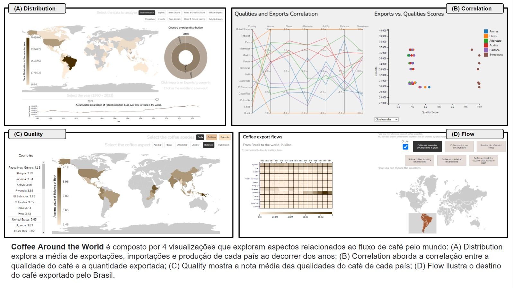

This project deals with the quality of coffee and the distribution of beans around the world. Views are available using the buttons below. Select the view you want and have fun exploring the details of each one!
To understand better the project and it's development, watch the video and read the report below.
Report
We are tree data science and artificial intelligence students at the school of applied mathematics at Fundação Getulio Vargas Rio de Janeiro, Brazil. The project is for the data visualization discipline, taught by Jorge Poco.
Isabela Yabe Martinez, Rodrigo Cavalcante Kalil and Luana Hatab Jorge